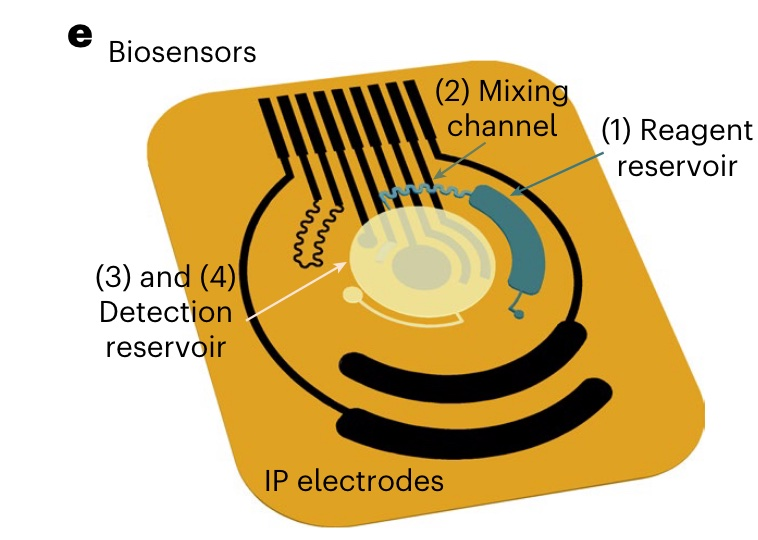
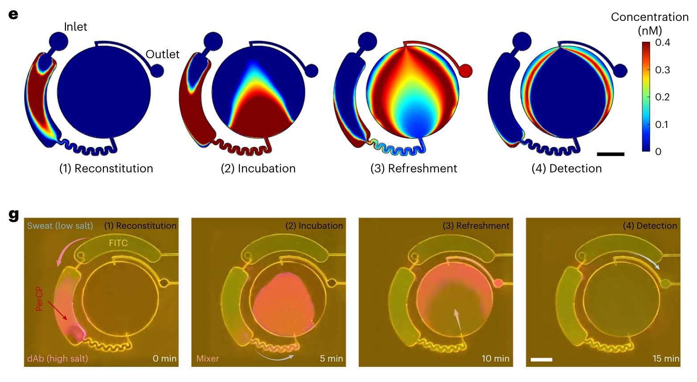

Modelling the detection chamber

CRP-dAb and cAb

CRP-dAb concentration in the detection reservoir (Part 1)

CRP-dAb concentration in the detection reservoir (Part 2)

Reaction-diffusion-advection numerical simulations

Fluid dynamics
- The velocity field \(\mathbf v\) has no dependence on concentration because sweat is dilute.
- Solve for \(\mathbf v\) using the Navier-Stokes equation for incompressible flow and the continuity equation. \[ \rho(\partial_t \mathbf v+(\mathbf v\cdot\nabla)\mathbf v)=-\nabla \mathbf{p}+\mu \nabla^2 \mathbf v \label{eq:navier_stokes} \] \[ \nabla \cdot \mathbf v= \mathbf{0} \label{eq:continuity} \]
Creeping (Stokes) flow
- Using sweat volumetric flowrate, the mean chamber chord length, and the width of the PET layer (\(\dot V, \ \bar{C}, \ W\)).
\[ \mathrm{Re}=\frac{\rho U L}{\mu }=\frac{10^{3}\cdot 10^{-4} \cdot 10^{-4}}{10^{-3}}=10^{-2} \ll 1 \]
Fluid flow in the microfluidic channel is in the Stokes flow regime. \[ -\tilde\nabla \tilde{\mathbf{p}}+\tilde\nabla^2 \tilde{\mathbf{v}}=\mathbf{0} \label{eq:stokes} \]
Solve alongside the non-dimensionalized continuity equation. \[ \tilde{\nabla} \cdot \tilde{\mathbf{v}}=\mathbf{0} \label{eq:nondimensionalized_continuity} \]
The Poisson pressure equation \[\frac{\Pi}{L^2}\tilde{\nabla} ^2 \tilde{\mathbf{p}}=- \rho \frac{ U^2}{L^2}(\tilde \nabla \cdot \tilde{\mathbf{v}})^2\] \[\tilde{\nabla} ^2 \tilde{\mathbf{p}}=-\frac{\rho UL}{\mu}(\tilde \nabla \cdot \tilde{\mathbf{v}})^2\] \[\tilde{\nabla} ^2 \tilde{\mathbf{p}}=0\]
Reaction-diffusion-advection dynamics (Part 1)

Reaction-diffusion-advection dynamics (Part 2)
\[ \partial _t \boldsymbol{\phi}_p(\mathbf x, t)= D \nabla^2\boldsymbol{\phi}_p-\mathbf v\cdot \nabla \boldsymbol{\phi}_p-\mathbf{R} \] \[ \partial _t \boldsymbol{\phi}_{a}(\mathbf x, t)= -\mathbf{R} \] \[ \partial _t \boldsymbol{\phi}_{c}(\mathbf x, t)= \mathbf{R} \] \[ \mathbf{R}(\boldsymbol{\phi}_p,\boldsymbol{\phi}_{a},\boldsymbol{\phi}_{c})=k_f(T)\boldsymbol{\phi}_p\boldsymbol{\phi}_a-k_r(T)\boldsymbol{\phi}_c \]
Non-dimensionalized reaction-diffusion-advection
Parameters aggregate into two time scales. \[ \partial _{\tilde t} \tilde{\boldsymbol{\phi}_p}= \frac{\tau D}{L^2} \tilde{\nabla^2}\tilde{\boldsymbol{\phi}_p}-\frac{\tau U }{L}\tilde{\mathbf v}\cdot \tilde{\nabla} \tilde{\boldsymbol{\phi}_p}-\tilde{\mathbf{R}} \] \[ \begin{aligned} \partial _{\tilde t} \tilde{\boldsymbol{\phi}_{a}}&= -\tilde{\mathbf{R}} & &\text{and} & \partial _{\tilde t} \tilde{\boldsymbol{\phi}_{c}}&= \tilde{\mathbf{R}} \end{aligned} \] \[ \tilde{\mathbf{R}}=\tilde{k_f}(T)\tilde{\boldsymbol{\phi}_p}\tilde{\boldsymbol{\phi}_a}-\tilde{k_r}(T)\tilde{\boldsymbol{\phi}}_c \]
The Peclet number compares diffusion and advection contribution. \[ \mathrm{Pe}=\frac{\tau _ \mathrm{diff}}{\tau _ \mathrm{adv}}=\frac{L^2/D}{L/U}=\frac{LU}{D}=\frac{(10^{-4})(10^{-4})}{(10^{-12})}=10^{4} \]
Advection dominates the flow. Use \(\tau=\tau_\mathrm{adv} = \frac{L}{U}\). \[ \partial _{\tilde t} \tilde{\boldsymbol{\phi}_p}= \frac{1}{\mathrm{{Pe}}} \tilde{\nabla^2}\tilde{\boldsymbol{\phi}_p}-\tilde{\mathbf v}\cdot \tilde{\nabla} \tilde{\boldsymbol{\phi}_p}-\tilde{\mathbf{R}} \]
\[ \partial _{\tilde t} \tilde{\boldsymbol{\phi}_p}= -\tilde{\mathbf v}\cdot \tilde{\nabla} \tilde{\boldsymbol{\phi}_p}-\tilde{\mathbf{R}} \] \[ \partial _{\tilde t} \tilde{\boldsymbol{\phi}_a}= -\tilde{\mathbf{R}} \]